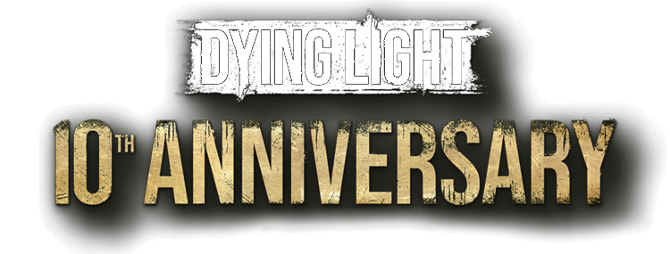

¡Todo el contenido de los últimos 10 años, todos los DLC, en un paquete!
¡¡¡COMPRALO YA!!!

¡Todo el contenido de los últimos 10 años, todos los DLC, en un paquete!
¡¡¡COMPRALO YA!!!
En un mundo devastado por una infección viral, la ciudad de Harran ha sido puesta en cuarentena, convirtiéndose en un campo de batalla entre los supervivientes y hordas de infectados sedientos de sangre. Kyle Crane, un agente encubierto de la GRE (Global Relief Effort), es enviado a la ciudad con la misión de recuperar un documento crucial que podría determinar el destino de la humanidad.
Sin embargo, al adentrarse en Harran, Crane se encuentra atrapado entre la lucha por la supervivencia de los habitantes y los oscuros secretos de su propia organización. Mientras busca cumplir su misión, se ve obligado a tomar decisiones que pondrán a prueba su moralidad y su lealtad.
Con mecánicas de parkour, un combate brutal y un ciclo dinámico de día y noche donde los infectados se vuelven más agresivos en la oscuridad, Dying Light ofrece una intensa experiencia de supervivencia en un mundo abierto lleno de peligros.